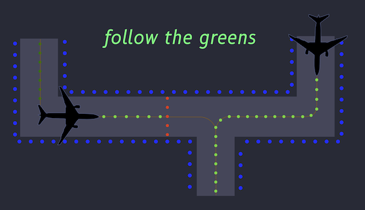
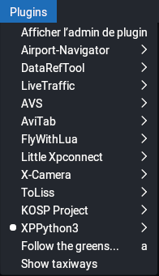
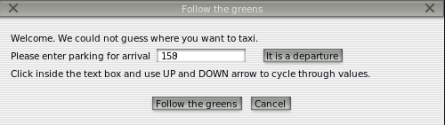
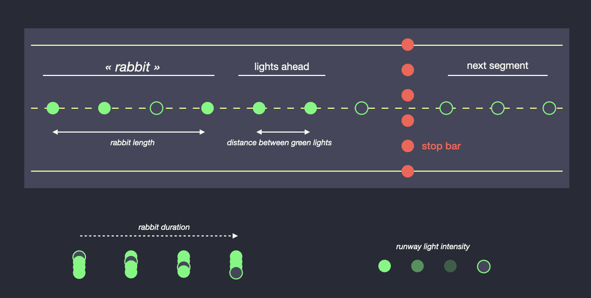
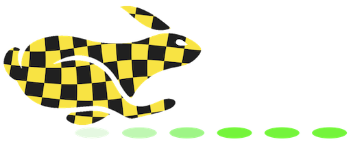

Follow the Greens
Follow the greens is a enhancement to airport infrastructure to ease ground operations.
It is an aid for ground movement, to indicate to pilots where and how to circulate on taxiways without ATC communication.
ATC Ground operators will highlight the taxi path the pilot has to follow with center taxiway green lights. A red line across the taxiway indicates the aircraft has to hold and wait for the red light to clear. Very much like car traffic lights.

No more path or taxiway segment names to remember. Just green lights to follow.
Follow the greens is part of the serious Advanced Surface Movement Guidance and Control System (A-SMGCS, See here if interested).
Please have a look at the following videos and search for « airport follow the greens » to get more information. There is nowadays a lot more information, there are a lot more manufacturers, and experimental project reports to learn from.
You'll find a lot more video through the search link above.
Follow the greens has numerous advantages discussed in the above videos, ranking to ease of use, to smoother taxi rides, to lower interaction with ground control.
Yeah, yeah, less fuel use also. Yeah, yeah, less CO2 produced. Yeah, yeah, follow the greens is realllly green. Can't be greener than that. No green bashing.
We brought Follow the greens concept to X-Plane as ATC and "AI" struggle to guide you on the ground. X-Plane yellow painted coach arrows on taxiways are fine, useful, but look too artificial.
Follow the greens is an existing system used at a handful airports. But now, thanks to this plugin, even your local muni can get Follow the greens (at no cost).

4D
After reading this paper, We decided to incorporate their proposal into FtG.
In a nutshell, FtG will now monitor your taxi speed and invite you to adjust it. It will do so by adjusting the speed of the «rabbit» light in front of the aircraft, (the pulsating light,) and the length of the rabbit run. If the rabbit runs fast and far, you can safely accelerate your taxi pace. If the rabbit is slow and short, you must reduce your speed because you are probably nearing a sharp turn or a mandatory stop.
Could it be simpler?
Follow the greens.
Try to catch the rabbit.
Installation
Release 2 will not work on X-Plane 11. If you want to use Follow the greens on X-Plane 11, you have to use Release 1.
FtG plugin is written in the python language. Therefore, you first need to install the XPPython3 plugin. This process is very similar to the Lua language plugin (XLua or FlyithLua) to use Lua scripts. Here, another language (Python), another plugin (XPPython3).
For the Release 2 of FtG, Version 4.5 or above of the XPPython3 plugin is required. Newer version of XPPython3 contain all you need to run Python plugin, including a version of the python language interpreter. There is no need to install other software.
Once XPPython3 plugin is installed, python plugin scripts are placed in
<X-Plane 12 Folder> / resources / plugins / PythonPlugins
Download the FtG plugin code and unzip it.
Place both the file PI_Followthegreens.py and the folder followthegreens in <X-Plane 12 Folder> / resources / plugins / PythonPlugins.
That's it.
Reload X-Plane, or the plugins, or the python scripts and you are all set.
When X-Plane is running and a plane is loaded, check the Plugins menu item at the top. It should now contain a Follow the greens... menu item.

Usage
To use Follow the greens at an airport facility, there is a little constrain on the airport: It must have a network of taxiways defined in its airport X-Plane file. Most airports do. If an airport does not have a network of taxiways defined in X-Plane, Follow the greens will tell you so and terminate.
To start follow the greens, you will need to supply some information.
If you are at a stand location, ready for departure, you will need to supply the runway you are taking-off from. Follow the greens will light the path to the entrance of the runway.

If you just landed and roll out, heading for your stand, you will need to supply the stand number. It must be a stand location known from X-Plane for that airport. Follow the greens will light the way to the stand.

If your path come across an holding position, FtG will indicate the holding position with a red bar of lights across the taxiway.
When approaching this red line across the taxiway, a dialog box will pop up and ask you to confirm when you received the clearance to progress.
Follow the greens is not aware of the ATC ground in use, and the ATC ground is not aware of the existance of FtG. Therefore, when ATC has given clearance and you aknowledged it, you can press the the «Clearance received» button in the dialog box.

Follow the greens will resume, turn off the red lights and light the next segment of greens.
It will do so until you reach your destination.
That is it. Nothing more. Nothing less.
What's New in Release 2: The Fourth Dimension
Release 2 adds monitoring of your current taxi speed, and adjustments of the rabbit light speed and length to invite you to either expedite your taxi ride, or, on the opposite, to slow down before a sharp turn or stop. (The «rabbit light» is the pulsating light in front of the aircraft.)
This enhancement sets the path for A-SMGCS Level 4 compliance.
If you’re rather safely go through your pre-takeoff checklist while taxiing, gently blow the daffodils on the sides of the taxiway with warm air, take your time to get to the runway, you can stick with Release 1.
But if you want to maximise your air time, never loose time in those unnecessary long runs around the airport, if you’d rather taxi at just below vr speed, give Release 2 a try. And monitor your brakes temperature.
Please notice the « overhype » with taxi 4D trajectories 🤣. FtG 1 is 2D (lateral guidance on the ground...), FtG 2 adds time information to get you there on time, that’s just a third dimension. FtG won’t ask you to fly to your holding position. Yet. (🤔 We may here have a definite path for improvement in a future release.)
Nowadays you know, you don’t sell anything if it does not have AI or 4D in its name.
FtG 2.0 is therefore 4D, with altitude=0 all the way 😇.
There is absolutely not AI, just HFAB (human fun and bugs, Claude did not even help me.).

Preference Parameters
Follow the greens exposes a few limited set of preference parameters. Parameters are specified in a preference file that can be found at
<X-Plane 12 Folder> / Output / preferences / followthegreens.prf
(Recommanded preference file location for X-Plane 12.)
It is a TOML formatted file.
An empty preference file followthegreens.prf is created in <X-Plane 12 Folder> / Output / preferences
on the first start.
You can add your preferences there.
Here is an example of the content of a typical preference file.
DISTANCE_BETWEEN_GREEN_LIGHTS = 20 # meters
LIGHTS_AHEAD = 0 # number of green lights
RABBIT_LENGTH = 10 # number of green lights
RABBIT_DURATION = 0.2 # seconds, no less than 0.1
RUNWAY_LIGHT_LEVEL_WHILE_FTG = "lo" # off, lo, med, hi
Parameters in the above file refer to the following items:

Please note that the values you enter here may affect X-Plane performances (faster rabbit, numerous taxiway lights...)
Preference file is (re-)loaded each time a new FtG session is started.
Here is description of the parameters available for customization.
Rabbit Length
The rabbit is the pulsating light in front of the aircraft. Its length is the number of lights that are pulsating.
If you set it to 0 (zero), there will be no rabbit.
RABBIT_LENGTH = 10
Rabbit Duration
It is the time that the pulsating light is switched off.
If set to 0.2 (seconds), the current rabbit light will be switched off 0.2 seconds,
then back on, and the next light will be switched off for 0.2 seconds.
Until all lights in the rabbit have been switched off in turn,
then the rabbit will switch off its first light.
RABBIT_DURATION = 0.2
Lights Ahead
This is the number of light that are lit in front of the rabbit lights. As the aircraft progresses, more lights are lit in front of the rabbit.
Its LIGHTS_AHEAD is the number of lights that are lit in front of the rabbit.
If set to 0, all lights are lit up to the next stop bar, or to the end of the taxi ride.
If you want no light ahead of the rabbit lights, set it to 1.
LIGHTS_AHEAD = 10
to light 10 lights more (fixed) after the last rabbit light, or
LIGHTS_AHEAD = 0
to light the whole greens up to the next stop, or
LIGHTS_AHEAD = 1
to have just one light ahead after the rabbit.
Use Threshold
Normally, FtG4D will guide you to the threshold of the runway. If you'd rather go the the extreme begining of the runway, set it to false:
USE_THRESHOLD = false
Runway Light Intensity Control
While FtG rabbit runs, all runway lights are dimmed to a preference value:
RUNWAY_LIGHT_LEVEL_WHILE_FTG
So if you set it to
RUNWAY_LIGHT_LEVEL_WHILE_FTG = "lo"
all runway lights will be dimmed to low while FtG is running.
Even completely off if you choose to do so.
Possible values are lo, med, hi and off.
Runway light luminosity will be restored to its original value after FtG terminates.
Alternatively, independently of FtG, runway lights can be dimmed thanks to the following standard X-Plane commands:
sim/operation/rwy_lights_off(sim/graphics/scenery/airport_light_level=0)sim/operation/rwy_lights_lo(sim/graphics/scenery/airport_light_level=0.25)sim/operation/rwy_lights_med(sim/graphics/scenery/airport_light_level=0.5)sim/operation/rwy_lights_hi(sim/graphics/scenery/airport_light_level=1)
Automagic Rabbit Speed Control
The goal of Release 2 is to supply taxi speed information to the pilot in addition to the direction (follow the greens). The speed information is supplied with two indicators:
- The «speed of the «rabbit» light (the faster the rabbit, the faster you should run to catch it up, the slower the rabbit, the slower you should go.)
- The «length of the rabbit run (the longer the rabbit, the more you can keep up with that speed, do not expect speed change.)
The control of the speed works as follow:
From the position of the aircraft, the distance to the next significan turn, and the type of the aircraft (if available), a speed range is estimated (min value, max value).
- If the aircraft is at or below the minimum range speed, the rabbit will propose to accelerate (run faster). This is indicated by a faster rabbit sequence.
- If the aircraft is at or above the maximum range speed, the rabbit will propose to slow down. This is indicated by a slower rabbit sequence.
- If the aircraft nears a stop light or the end of the greens (at about 200 meters from it), the rabbit will propose to slow down.
- If the aircraft moves at a speed within its estimated range, the rabbit runs at normal speed.
Warning and braking distances are estimeted from the current speed and aircraft type if available.
Manual Rabbit Speed Control
The speed and length of the rabbit can be controlled by two preference parameters:
RABBIT_LENGTH = 10 # number of lights that blink in front of aircraft
RABBIT_DURATION = 0.2 # sec duration of "off" light in rabbit
Setting the RABBIT_LENGTH to 0, or RABBIT_DURATION to 0 (number zero) will disable the rabbit,
just leaving the entire path or a few static lights ahead.
You can manually adjust rabbit speed and length with the following FtG commands:
XPPython3/followthegreens/speed_slowest(length ÷ 2, speed × 2, shorter, twice slower)XPPython3/followthegreens/speed_slower(normal length, speed × 2, twice slower)XPPython3/followthegreens/speed_med(normal length, normal speed)XPPython3/followthegreens/speed_faster(normal length, speed ÷ 2, twice faster)XPPython3/followthegreens/speed_fastest(length × 2, speed ÷ 2, longer, twice faster)
If you force the rabbit speed and length using one of the above command, rabbit auto-tuning will be disabled for this run of Follow the greeens.
XPPython3/followthegreens/speed_auto
will set rabbit mode back to automagic tuning depending on aircraft speed and recommended speed range.
You can use these commands to force the rabbit in a certain mode and get used to that mode, for discovery or testing for example. Once you'll get a feeling of the different mode, it will be magic to taxi just watching the greens.
Strict Route Search Mode
The goal of FtG is to provide a route from where the aircraft is located to a destination, either a runway entry, or a parking stand. It does this by finding a route on a network of taxiways.
But!
Taxiways may have contraints.
- First, there might be aircraft size/width/weight constraints. A narrow taxiway is not suitable for an airliner.
- Second, there might be local constrainst like one-way taxiways, taxiways used for inner/outer traffic.
- Third, runways may sometime be used as taxiways, usually with a U-turn surface at its ends.
X-Plane airport designer sometimes provides detailed taxiway information, sometimes not.
Follow the greens has to cope with what is available in airport definition files.
To do this, the algorithm first tries to find a route respecting all constraints. If no route is found, the algorith will relax some constraints, one by one until a route is found.
If you want to respect taxiway constraints, please set the following preference parameter:
RESPECT_CONSTRAINTS = true
Note that boolean preferences need to be set to text value true or false in lowercase, no quote.
Please recall that Follow the greens does not optimisation. It finds the shortest path, respecting constraints if possible. The shortest path is .. the shortest. It is not the path with the less turn, or the more logical path, it is the shortest. If the proposed path does not follow desired path, engage the path you desire, progress a little on that path and then, in the dialog box, select the «New greens» button to recompute a new path from your current position.
FtG Control and Monitoring
FtG Commands
FtG adds the follwoing commands:
XPPython3/followthegreens/main_windown_toggleXPPython3/followthegreens/send_clearance_okXPPython3/followthegreens/send_cancelXPPython3/followthegreens/send_okXPPython3/followthegreens/highlight_taxiways_toggleXPPython3/followthegreens/new_greensXPPython3/followthegreens/bookmark
FtG Monitoring Datarefs
FtG adds the following read-only monitoring dataref:
XPPython3/followthegreens/is_running, is 1 if FtG is running and 0 if not.XPPython3/followthegreens/is_holding, is 1 when FtG expects a clearance to progress.
Intended Use by External Plugins
Monitoring datarefs and commands are designed to be used by other software to instruct Follow the greens to proceed.
XPPython3/followthegreens/is_holdingdataref is meant to be used by other plugins to let them know FtG is waiting for clearance.XPPython3/followthegreens/send_clearance_okcommand be used by other plugins to signal FtG that the clearance is given.
if DatarefValue(XPPython3/followthegreens/is_holding) == 1 and clear:
execute Command(XPPython3/followthegreens/send_clearance_ok)
Show Taxiway
If enabled, an additional entry is visible in the Plugins menu.
Show taxiways is a command that will illuminate all taxiways at the current airport.
Press the OK button in the dialog box or select the menu entry again to dismiss all lights.
Notes on Performances
When inactive, FtG uses no resources.
Recall that FtG is only active while it runs and during taxiing, when fps is not an issue.
Follow the greens uses little resources.
- Every 5 seconds or so, depending on the aircraft speed, FtG checks the aircraft position and speed and adjust greens accordingly. («aircraft flight loop») Checks occurs slightly more often if the aircraft moves fast.
- The rabbit flight loop» is called more often, depending on the rabbit speed. The faster the rabbit, the more pressure on X-Plane. With 0.2 seconds rabbit, FtG is unnoticable. Faster rabbits may impact performance.
When a new green is initiated, one might expect a slight hiccup when looking for a route at a large airport with numerous taxiways. Hiccup should not last more than one or two seconds in this case. During the computation, X-Plane seems to freeze for a couple of seconds but it never last.
Troubleshooting
Set Up
One size does not fit all.
Parameters in FtG are fitted according to information FtG can find and rely on like the aircraft ICAO to estimate its size and weight. From this environmental information, FtG sets a a few key parameters which have been tested for the situation.
If proposed parameters are not appropriate, it always is possible to supply preferred parameters through the preference file.
The following parameters are key to ensure an enjoyable FtG experience. Depending on the aircraft size, the leading light must be visible a few reasonable meters in front of the aircraft. If the length of the visible lights ahead is too short, the time to react to a situation might/will be short. The benefit of FtG will not be exploited to its maximum.
A green path all the way to destination, or just a few lights ahead, or a running rabbit in front of the aircraft is a matter of preference.
What really matters is the indication you get from the green. If you like a rabbit light, make sure it runs well in front of you. A rule of thumb is to have it run at least 3 or 4 times the length of your aircraft. So for a 40 meter A320, have it run up to 160 meters in front of you.
When you will get use to the rythm of the rabbit light, you will notice the "speed" changes in the rabbit lighting. You will really see/feel it run fater or slower. Adjust your taxi speed accordingly.
I witness FtG at Dubai airport (OMDB). Aircraft was taxiing fairly slowly. The rabbit was short, about 1 aircraft length in front of the aircraft, running quickly (about one second for the light to run the entire distance lit in front of the aircraft.) It mainly was showing directions. Turn left here, turn right here. I did not see any stop bar. I surely must be entertaining for the pilot. Just follow the greens. Up to the last turn at the gate. It was not 4D. It would not adpat to circumstances like aircraft speed, or proximity to a sharp turn. (Search for follow the greens at https://www.pprune.org, it is ineresting to read what real pilots think.)
Follow the Greens 4D is experimental, SMGCS Level 4 compliant, and only exist and run here in X-Plane 12+!
If you have comments, or suggestions, or enhancement requests, please let us discuss on discord.
I hope FtG will make your taxi rides more enjoyable.
In case of Misbehavior...
FtG may sometimes not find a route, or show undesired behavior.
FtG produces a log file named ftg_log.txt located in python plugin folder, right next to PI_FollowTheGreens.py file.
In case of trouble, please always provide that file, very much like X-Plane support will ask you to provide the log.txt file.
If you can, please also provide the file XPPython3Log.txt in the main X-Plane 12 folder.
To further explore an issue, it is possible to augment the level of logged information.
To do so, please set the following variable in followthegreens.prf file:
LOGGING_LEVEL = 10
The default value is 20. Lower value produces more logging.
As explained above, the preference file is reloaded before each new Follow the greens session.
In case of misbehavior, it is therefore simple to edit the preference file, increase the level of logging
to typical 10 value LOGGING_LEVEL = 10, and restart the misbehaving session.
This way we will have a lot more information to understand the misbehavior.
You can get support in the forum thread dedicated to FtG.
You can also get support on the following discord server.
See Also

Taxi safely